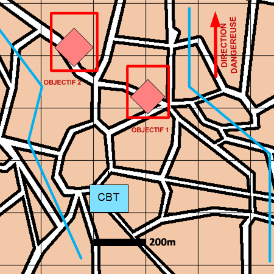

NIVEAU : Automate
ARME : Melee
MISSION : Maintenir Le Contact
NIVEAU : Automate
ARME : Melee
MISSION : Maintenir Le Contact
Schéma de modélisationMaintenir Le Contact |
Paramètres obligatoiresFuseauZone de responsabilité. Direction Dangereuse Orientation privilégiée des capteurs. Objectifs Agents ennemis. |
|
Paramètres optionnelsLigne de coordination [LC] |
||
 |
Fiches missions |  |